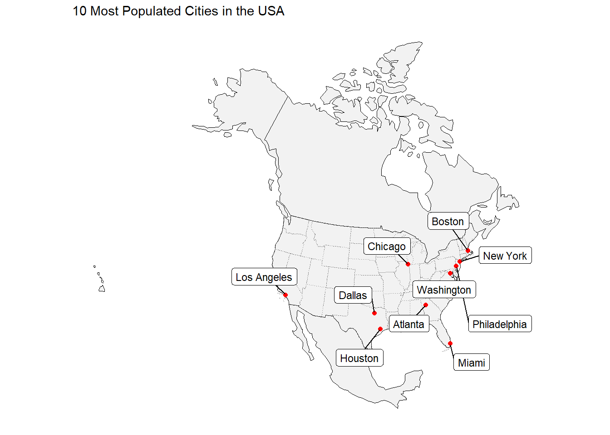
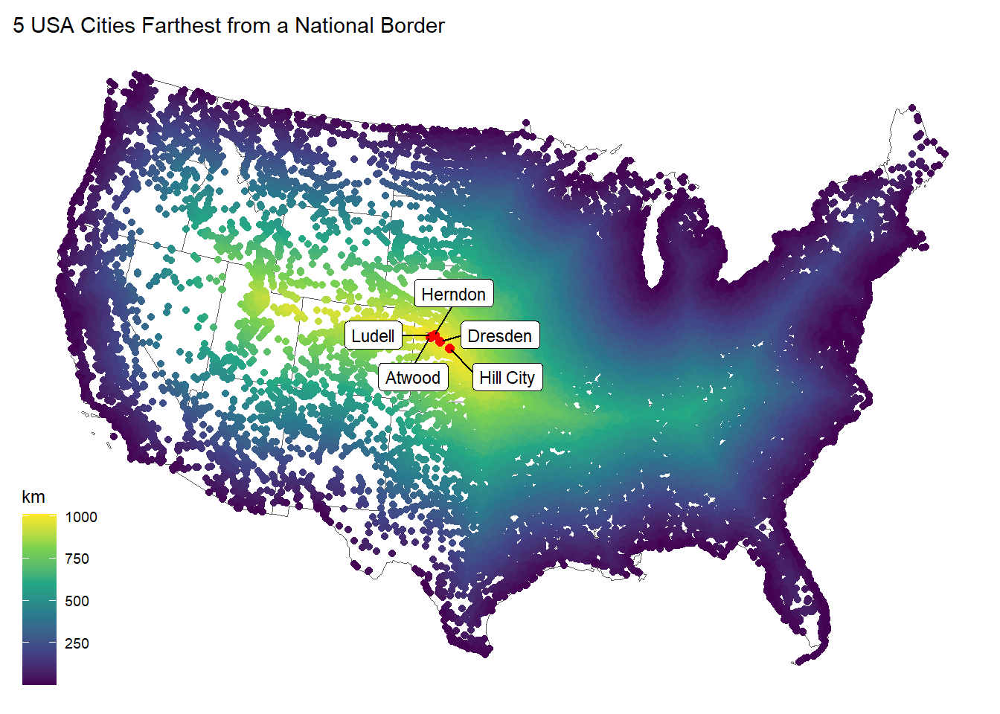
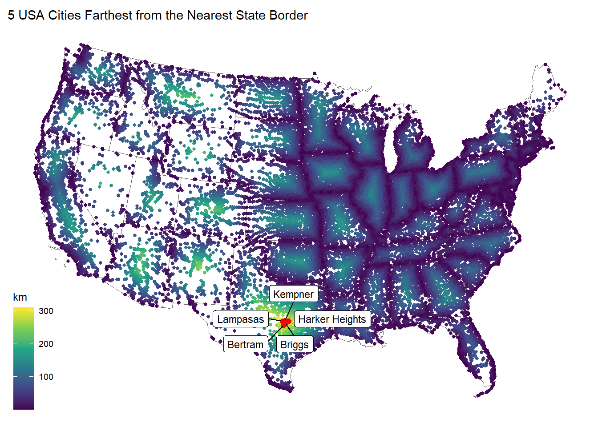
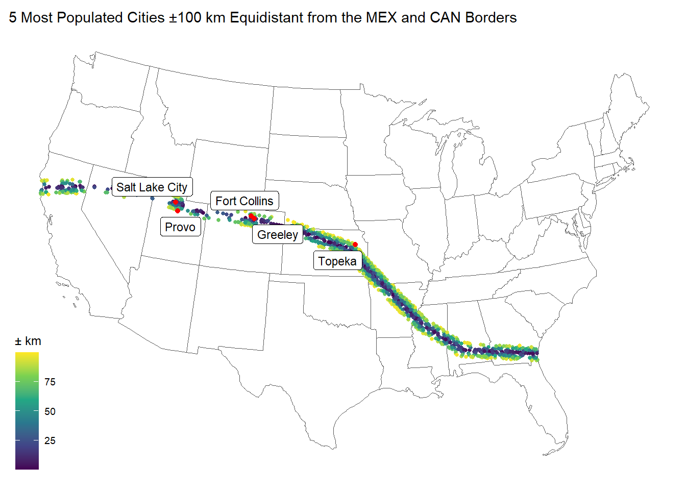
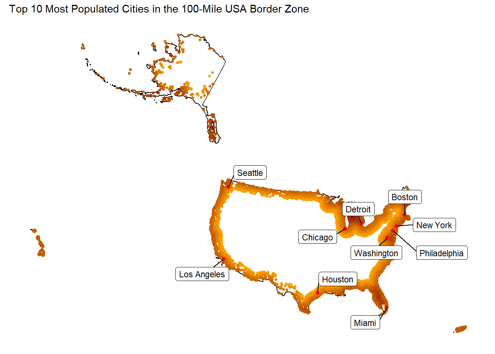

Lab 2 - Distances and Projections
In this lab we will explore the properties of sf, sfc, and sfg features & objects; how they are stored; and issues related to distance calculation and coordinate transformation.
We will continue to build on our data wrangling and data visualization skills; as well as document preparation via Quarto and GitHub.
libraries:
# spatial data science
library(tidyverse)
library(sf)
library(units)
# Data
library(knitr)
library(rmarkdown)
# Visualization
library(gghighlight)
library(ggrepel)
library(knitr)
library(mapview)
library(flextable)
library(viridis)Question 1:
1.1 Define a Projection
For this lab we want to calculate distances between features, therefore we need a projection that preserves distance at the scale of CONUS. For this, we will use the North America Equidistant Conic:
eqdc <- '+proj=eqdc +lat_0=40 +lon_0=-96 +lat_1=20 +lat_2=60 +x_0=0 +y_0=0 +datum=NAD83 +units=m +no_defs'1.2 - Get USA state boundaries
In R, USA boundaries are stored in the USAboundaries package. In case this package and data are not installed:
remotes::install_github("ropensci/USAboundaries")
remotes::install_github("ropensci/USAboundariesData")Once installed:
USA state boundaries can be accessed with
USAboundaries::us_states(resolution = "low"). Given the precision needed for this analysis we are ok with the low resolution.Make sure you only have the states in the continental United States (CONUS) (Hint use
filter)Make sure the data is in a projected coordinate system suitable for distance measurements at the national scale (
eqdc).
usa <- USAboundaries::us_states(resolution = "low") %>%
filter(!state_name %in% c("Alaska", "Hawaii", "Puerto Rico", "Guam", "American Samoa", "U.S. Virgin Islands", "Northern Mariana Islands")) %>%
st_transform(crs = eqdc)1.3 - Get country boundaries for Mexico, the United States of America, and Canada
In R, country boundaries are stored in the rnaturalearth package. In case this package is not installed:
remotes::install_github("ropenscilabs/rnaturalearthdata")
options(repos = c(CRAN = "https://cloud.r-project.org"))
install.packages("rnaturalearth")package 'rnaturalearth' successfully unpacked and MD5 sums checked
The downloaded binary packages are in
C:\Users\colle\AppData\Local\Temp\RtmpQPmcxT\downloaded_packageslibrary(rnaturalearth)Once installed:
World boundaries can be accessed with
rnaturalearth::countries110.Make sure the data is in simple features (
sf) format (Hint use thest_as_sfvariable).Make sure you only have the countries you want (Hint
filteron theadminvariable)Make sure the data is in a projected coordinate system suitable for distance measurements at the national scale (
eqdc).
musac <- rnaturalearth::countries110 %>%
st_as_sf() %>%
filter(ADMIN %in% c("Mexico", "United States of America", "Canada")) %>%
st_transform(crs = eqdc)1.4 - Get city locations from the CSV file
The process of finding, downloading and accessing data is the first step of every analysis. Here we will go through these steps (minus finding the data).
First go to this site and download the appropriate (free) dataset into the data directory of this project.
Once downloaded, read it into your working session using readr::read_csv() and explore the dataset until you are comfortable with the information it contains.
While this data has everything we want, it is not yet spatial. Convert the data.frame to a spatial object using st_as_sf and prescribing the coordinate variables and CRS (Hint what projection are the raw coordinates in?)
Finally, remove cities in states not wanted and make sure the data is in a projected coordinate system suitable for distance measurements at the national scale:
Congratulations! You now have three real-world, large datasets ready for analysis.
uscities <- readr::read_csv("data/uscities.csv") %>%
st_as_sf(coords = c("lng", "lat"), crs = 4326) %>%
filter(!state_id %in% c("HI", "AK", "PR")) %>%
st_transform(crs = eqdc)Question 2
Here we will focus on calculating the distance of each USA city to (1) the national border (2) the nearest state border (3) the Mexican border and (4) the Canadian border. You will need to manipulate you existing spatial geometries to do this using either st_union or st_combine depending on the situation. In all cases, since we are after distances to borders, we will need to cast (st_cast) our MULTIPPOLYGON geometries to MULTILINESTRING geometries. To perform these distance calculations we will use st_distance().
2.1 - Distance to USA Border (coastline or national) (km)
For 2.1 we are interested in calculating the distance of each USA city to the USA border (coastline or national border). To do this we need all states to act as single unit. Convert the USA state boundaries to a MULTILINESTRING geometry in which the state boundaries are resolved. Please do this starting with the states object and NOT with a filtered country object. In addition to storing this distance data as part of the cities data.frame, produce a table (flextable) documenting the five cities farthest from a state border. Include only the city name, state, and distance.
usa_border<- usa %>%
st_union() %>%
st_cast("MULTILINESTRING")
uscities_border <- uscities %>%
st_distance(usa_border) %>%
as.vector()
uscities$country_border <- uscities_border / 1000
slice_max(uscities, n = 5, order_by = country_border) %>%
select(city, state_id, country_border) %>%
st_drop_geometry() %>%
flextable() %>%
set_header_labels(
state_id = "state",
country_border = "distance from border (km)"
) %>%
set_caption("5 Cities Farthest From a State Border")city | state | distance from border (km) |
|---|---|---|
Ludell | KS | 1,012.508 |
Dresden | KS | 1,012.398 |
Herndon | KS | 1,007.763 |
Hill City | KS | 1,005.140 |
Atwood | KS | 1,004.734 |
2.2 - Distance to States (km)
For 2.2 we are interested in calculating the distance of each city to the nearest state boundary. To do this we need all states to act as single unit. Convert the USA state boundaries to a MULTILINESTRING geometry in which the state boundaries are preserved (not resolved). In addition to storing this distance data as part of the cities data.frame, produce a table (flextable) documenting the five cities farthest from a state border. Include only the city name, state, and distance.
usa_states <- usa %>%
st_cast("MULTILINESTRING")
states_distance <- uscities %>%
st_distance(usa_states) %>%
apply(1, min) %>%
as.vector()
uscities$state_border <- states_distance/1000
slice_max(uscities, n = 5, order_by = state_border) %>%
select(city, state_id, state_border) %>%
st_drop_geometry() %>%
flextable() %>%
set_header_labels(
state_id = "state",
state_border = "distance from border (km)"
) %>%
set_caption("5 USA Cities Farthest From a State Border")city | state | distance from border (km) |
|---|---|---|
Briggs | TX | 309.4150 |
Lampasas | TX | 308.9216 |
Kempner | TX | 302.5868 |
Bertram | TX | 302.5776 |
Harker Heights | TX | 298.8138 |
2.3 - Distance to Mexico (km)
For 2.3 we are interested in calculating the distance of each city to the Mexican border. To do this we need to isolate Mexico from the country objects. In addition to storing this data as part of the cities data.frame, produce a table (flextable) documenting the five cities farthest from the Mexican border. Include only the city name, state, and distance.
mexico_border <- musac %>%
filter(ADMIN == "Mexico") %>%
st_cast("MULTILINESTRING")
mexico_distance <- st_distance(uscities, mexico_border) %>%
as.vector()
uscities$mexico_border <- mexico_distance/1000
slice_max(uscities, n = 5, order_by = mexico_border) %>%
select(city, state_id, mexico_border) %>%
st_drop_geometry() %>%
flextable() %>%
set_header_labels(
state_id = "state",
mexico_border = "distance from Mexico (km)"
) %>%
set_caption("5 Cities Farthest From the Mexican Border")city | state | distance from Mexico (km) |
|---|---|---|
Grand Isle | ME | 3,282.825 |
Caribou | ME | 3,250.330 |
Presque Isle | ME | 3,234.570 |
Oakfield | ME | 3,175.577 |
Island Falls | ME | 3,162.285 |
2.4 - Distance to Canada (km)
For 2.4 we are interested in calculating the distance of each city to the Canadian border. To do this we need to isolate Canada from the country objects. In addition to storing this data as part of the cities data.frame, produce a table (flextable) documenting the five cities farthest from a state border. Include only the city name, state, and distance.
canada_border <- musac %>%
filter(ADMIN == "Canada")%>%
st_cast("MULTILINESTRING")
canada_distance <- st_distance(uscities, canada_border) %>%
as.vector()
uscities$canada_border <- canada_distance/1000
slice_max(uscities, n = 5, order_by = canada_border) %>%
select(city, state_id, canada_border) %>%
st_drop_geometry() %>%
flextable() %>%
set_header_labels(
state_id = "state",
canada_border = "distance from Canada (km)"
) %>%
set_caption("5 Cities Farthest From the Canadian Border")city | state | distance from Canada (km) |
|---|---|---|
Guadalupe Guerra | TX | 2,206.455 |
Sandoval | TX | 2,205.641 |
Fronton | TX | 2,204.794 |
Fronton Ranchettes | TX | 2,202.118 |
Evergreen | TX | 2,202.020 |
Question 3
In this section we will focus on visualizing the distance data you calculated above. You will be using ggplot to make your maps, ggrepl to label significant features, and gghighlight to emphasize important criteria.
3.1 Data
Show the 3 continents, CONUS outline, state boundaries, and 10 largest USA cities (by population) on a single map
Use geom_sf to plot your layers Use lty to change the line type and size to change line width Use ggrepel::geom_label_repel to label your cities
top10_cities <- uscities %>%
arrange(desc(population)) %>%
slice(1:10)
ggplot() +
geom_sf(data = musac, fill = "gray95", color = "black", lty = "solid", size = 0.5) +
geom_sf(data = usa, fill = NA, color = "gray40", lty = "dotted", size = 0.3) +
geom_sf(data = top10_cities, color = "red") +
ggrepel::geom_label_repel(
data = top10_cities,
aes(label = city, geometry = geometry),
stat = "sf_coordinates",
size = 3,
max.overlaps = 20,
box.padding = 0.5) +
labs(fill = "top10_cities") +
ggthemes::theme_map() +
labs(title = "10 Most Populated Cities in the USA")
3.2 - City Distance from the Border
Create a map that colors USA cities by their distance from the national border. In addition, re-draw and label the 5 cities that are farthest from the border.
farthest_cities <- uscities %>%
slice_max(n = 5, order_by = country_border)
ggplot() +
geom_sf(data = usa, fill = NA) +
geom_sf(data = uscities, aes(color = country_border)) +
geom_sf(data = farthest_cities, color = "red", size = 2) +
ggrepel::geom_label_repel(
data = farthest_cities,
aes(label = city, geometry = geometry),
stat = "sf_coordinates",
size = 3) +
labs(fill = "farthest_cities") +
ggthemes::theme_map() +
scale_color_viridis_c(
option = "viridis",
name = "km" )+
labs(title = "5 USA Cities Farthest from a National Border")
3.3 City Distance from Nearest State
Create a map that colors USA cities by their distance from the nearest state border. In addition, re-draw and label the 5 cities that are farthest from any border.
farthest_cities <- uscities %>%
slice_max(state_border, n = 5)
ggplot() +
geom_sf(data = usa, fill = NA, color = "gray40", size = 0.5) +
geom_sf(data = uscities, aes(color = state_border), size = 1) +
geom_sf(data = farthest_cities, color = "red", size = 2) +
ggrepel::geom_label_repel(
data = farthest_cities,
aes(label = city, geometry = geometry),
stat = "sf_coordinates",
size = 3) +
labs(fill = "farthest_cities") +
ggthemes::theme_map() +
scale_color_viridis_c(
option = "viridis",
name = "km" )+
labs(title = "5 USA Cities Farthest from the Nearest State Border") 
3.4 Equidistance boundary from Mexico and Canada
Here we provide a little more challenge. Use gghighlight to identify the cities that are equal distance from the Canadian AND Mexican border plus or minus 100 km.
In addition, label the five (5) most populous cites in this zone.
Hint: (create a new variable that finds the absolute difference between the distance to Mexico and the distance to Canada)
uscities <- uscities %>%
mutate(distance_diff = abs(mexico_border - canada_border))
equidistant_cities <- uscities %>%
filter(distance_diff <= 100)
top5_cities <- equidistant_cities %>%
arrange(desc(population)) %>%
slice(1:5)
ggplot() +
geom_sf(data = usa, fill = NA) +
geom_sf(data = equidistant_cities, aes(color = distance_diff), size = 1) +
gghighlight::gghighlight(
distance_diff <= 100,
unhighlighted_params = list(color = "gray80")) +
geom_sf(data = top5_cities, color = "red") +
ggrepel::geom_label_repel(
data = top5_cities,
aes(label = city, geometry = geometry),
stat = "sf_coordinates",
size = 3) +
scale_color_viridis_c(option = "viridis", name = "± km") +
labs(title = "5 Most Populated Cities ±100 km Equidistant from the MEX and CAN Borders")+
ggthemes::theme_map()
Question 4 - Real World Application
Recently, Federal Agencies have claimed basic constitutional rights protected by the Fourth Amendment (protecting Americans from random and arbitrary stops and searches) do not apply fully at our borders (see Portland). For example, federal authorities do not need a warrant or suspicion of wrongdoing to justify conducting what courts have called a “routine search,†such as searching luggage or a vehicle. Specifically, federal regulations give U.S. Customs and Border Protection (CBP) authority to operate within 100 miles of any U.S. “external boundaryâ€. Further information can be found at this ACLU article.
4.1 Quantifying Border Zone
How many cities are in this 100 mile zone? (100 miles ~ 160 kilometers)
zone <- USAboundaries::us_states(resolution = "low") %>%
st_transform(crs = eqdc) %>%
st_union() %>%
st_cast("MULTILINESTRING")
zone_border<- zone %>%
st_buffer(160934)
zone_union <- zone_border %>%
st_union() %>%
st_cast("MULTILINESTRING")
cities <- readr::read_csv("data/uscities.csv") %>%
st_as_sf(coords = c("lng", "lat"), crs = 4326) %>%
st_transform(crs = eqdc)
zone_cities <- cities %>%
st_intersects(zone_border)
zone_cities <- cities[st_intersects(cities, zone_border, sparse = FALSE), ]
num_cities <- nrow(zone_cities)
num_cities[1] 13916How many people live in a city within 100 miles of the border?
pop_in_zone <- sum(zone_cities$population, na.rm = TRUE)
pop_in_zone[1] 263739489What percentage of the total population is in this zone?
total_population <- sum(uscities$population, na.rm = TRUE)
percent_in_zone <- (pop_in_zone / total_population) * 100
percent_in_zone[1] 66.56246Does it match the ACLU estimate in the link above? Yes, the article states that approximately two-thirds(66.67%) of the population lives within 100 miles of the border, which is close to the percentage calculated.
Report this information as a table.
tibble(
Cities = scales::comma(num_cities),
Population = scales::comma(pop_in_zone),
`Percentage of Population` = paste0(round(percent_in_zone, 2), "%")
) %>%
flextable::flextable() %>%
flextable::set_caption("Within the 100-Mile USA Border Zone") %>%
flextable::theme_vanilla() %>% # Apply a vanilla theme for less crowded look
flextable::align(align = "center", j = c("Cities", "Population", "Percentage of Population")) %>%
flextable::padding(padding = 15) Cities | Population | Percentage of Population |
|---|---|---|
13,916 | 263,739,489 | 66.56% |
4.2 Mapping Border Zone
Make a map highlighting the cites within the 100 mile zone using gghighlight. Use a color gradient from ‘orange’ to ‘darkred’ Label the 10 most populous cities in the Danger Zone
zone_distance <- st_distance(zone_cities, zone_union) %>%
as.vector()
zone_cities$zone_border <- zone_distance
zone_cities <- st_make_valid(zone_cities)
top10_cities <- zone_cities %>%
arrange(desc(population)) %>%
slice(1:10)
ggplot() +
geom_sf(data = zone, fill = NA) +
geom_sf(data = zone_cities, aes(color = zone_border), size = 1, fill = NA)+
geom_sf(data = top10_cities, color = "red", fill = NA) +
ggrepel::geom_label_repel(
data = top10_cities,
aes(label = city, geometry = geometry),
stat = "sf_coordinates",
size = 3,
max.overlaps = 20,
box.padding = 0.5) +
labs(title = "Top 10 Most Populated Cities in the 100-Mile USA Border Zone") +
scale_color_gradient(low = "orange", high = "darkred", guide = "none") +
ggthemes::theme_map() +
theme(legend.position = "bottom")
4.3 Instead of labeling the 10 most populous cites, label the most populous city in each state within the Danger Zone.
zone_distance <- st_distance(zone_cities, zone) %>%
as.vector() / 1609.34 # 1 mile = 1609.34 meters
zone_cities$zone_border <- zone_distance
zone_cities <- st_make_valid(zone_cities)
most_populous_cities <- zone_cities %>%
group_by(state_id) %>%
filter(population == max(population)) %>%
ungroup()
ggplot() +
geom_sf(data = zone, fill = NA) +
geom_sf(data = zone_cities, aes(color = zone_border), size = 1, fill = NA) +
geom_sf(data = most_populous_cities, color = "red", fill = NA) +
ggrepel::geom_label_repel(
data = most_populous_cities,
aes(label = city, geometry = geometry),
stat = "sf_coordinates",
size = 3,
max.overlaps = 80,
box.padding = 0.7) +
scale_color_viridis_c(
name = "Distance from Border (miles)",
option = "inferno",
begin = 0.4, # skip the dark purples/blacks
end = 0.95 # stop before very light yellow-whites
) +
ggthemes::theme_map() +
theme(legend.position = "bottom")